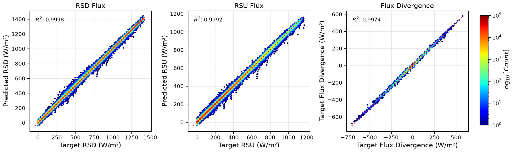
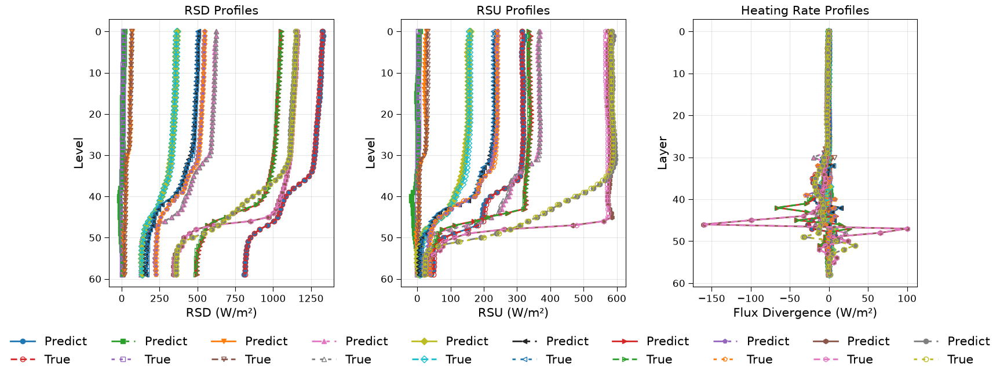

Atmosphere entire radiation scheme benchmark
This section documents the experimental results comparing different neural network architectures for radiative transfer modeling in the RTnn framework, using the CAMS (Copernicus Atmosphere Monitoring Service) dataset. All models were trained with identical hyperparameters where applicable.
Note
The heating rate (HR) metrics in this benchmark are on the same unit as the flux metrics. While the high R² values indicate excellent predictive performance for both outputs, the HR metrics are reported in units of W/m² (flux divergence) and thus appear numerically larger.
Model Performance Comparison
This presents a comprehensive comparison of four different neural network architectures trained on the CAMS dataset. All models were trained with identical hyperparameters where applicable.
Experiment Configuration
All models were trained with the following common configuration:
Dataset: CAMS (Copernicus Atmosphere Monitoring Service) data
Training years: 2009-2018
Testing year: 2014
Input features: 11 channels (tlay, play, h2o, o3, co2, n2o, ch4, cloud_lwp, cloud_iwp, mu0, sfc_alb)
Output channels: 2 (rsd, rsu)
Sequence length: 60 vertical levels
Normalization: minmax/log1p-standard scaling
Loss function: Huber loss (β=0.5, δ=1.0)
Learning rate: 0.0001
Batch size: 4
Epochs: 400
Hidden size: 256
Number of layers: 3
Dropout: 0.1
Model Architectures
Four different architectures were evaluated:
LSTM (Long Short-Term Memory)
Traditional recurrent architecture
Model identifier: lstm_h256_l3_d0d1
GRU (Gated Recurrent Unit)
Simplified recurrent architecture
Model identifier: gru_h256_l3_d0d1
Transformer Encoder
Attention-based architecture with 4 heads
Embedding size: 256
Forward expansion factor: 4
Model identifier: encodertorch_e256_h4_l3_fe4_d0d1
FCN (Fully Connected Network)
Baseline dense architecture
Model identifier: fcn_h256_l3_d0d1
Performance Metrics
The following metrics were used for evaluation (validation set, epoch 400):
Loss: Huber loss value
NMAE: Normalized Mean Absolute Error (normalized by target range)
NMSE: Normalized Mean Squared Error (normalized by target variance)
MAE: Mean Absolute Error (in physical units)
MSE: Mean Squared Error (in physical units)
R²: Coefficient of determination
Runtime: Training time per epoch (in seconds)
Quantitative Comparison - Fluxes
The table below shows the performance comparison for the 2 flux outputs (rsd and rsu) at epoch 400 (final epoch).
Model |
Loss ↓ |
NMAE ↓ |
NMSE ↓ |
R² ↑ |
MAE ↓ |
MSE ↓ |
Runtime (s/epoch) |
|---|---|---|---|---|---|---|---|
LSTM |
8.55e-05 |
8.15e-03 |
9.28e-03 |
0.999769 |
3.14e-03 |
4.52e-03 |
34.0 - 37.0 |
GRU |
1.07e-04 |
1.19e-02 |
1.35e-02 |
0.999516 |
4.60e-03 |
6.54e-03 |
33.8 - 36.0 |
Transformer |
1.95e-03 |
8.55e-02 |
8.64e-02 |
0.998632 |
3.29e-02 |
4.20e-02 |
~35.0 |
FCN |
2.88e-03 |
6.82e-02 |
7.72e-02 |
0.984064 |
2.62e-02 |
3.75e-02 |
~30.0 |
Note: ↓ indicates lower is better, ↑ indicates higher is better. MAE and MSE are reported in physical units (W/m²).
Quantitative Comparison - Heating Rates
The table below shows the performance for the heating rate output at epoch 400 (final epoch).
Model |
NMAE ↓ |
NMSE ↓ |
R² ↑ |
MAE ↓ |
MSE ↓ |
|---|---|---|---|---|---|
LSTM |
6.47e-02 |
4.99e-02 |
0.997423 |
3.37e-01 |
8.51e-01 |
GRU |
7.02e-02 |
5.51e-02 |
0.996855 |
3.66e-01 |
9.40e-01 |
Transformer |
9.35e-02 |
6.65e-02 |
0.995337 |
4.87e-01 |
9.38e+00 |
FCN |
9.34e-01 |
6.74e-01 |
0.529233 |
4.87e+00 |
1.15e+01 |
Note: Heating rate metrics are on a different scale than flux metrics.
Quantitative Comparison - Training vs Validation
Model |
Train Loss |
Valid Loss |
|---|---|---|
LSTM |
8.60e-05 |
8.55e-05 |
GRU |
1.07e-04 |
1.07e-04 |
Transformer |
4.51e-03 |
1.95e-03 |
FCN |
3.18e-03 |
2.88e-03 |
Key Findings
Best Overall Performance for Fluxes: The LSTM model achieves the highest R² score (0.999769), lowest MAE (3.14e-03 W/m²), and lowest MSE (4.52e-03 W/m²) for the main flux outputs at epoch 400, demonstrating excellent capability in capturing radiative transfer processes in the CAMS data. The GRU performs similarly, with slightly higher errors but still exceptionally high accuracy.
Best Performance for Heating Rates: The LSTM model also shows better performance for heating rate predictions, achieving the highest R² values (0.997423), lowest MSE (8.51e-01 K/day), and lowest MAE (3.37e-01 K/day).
Runtime Efficiency: The FCN model is the fastest (~30 s/epoch) but at the cost of significantly lower accuracy. The recurrent models (LSTM, GRU) are also efficient with ~34-36 s/epoch. The Transformer model has a similar runtime to the recurrent models.
Generalization Gap: LSTM and GRU show excellent generalization with minimal gap between training and validation. The Transformer shows a larger gap but still performs well. The FCN shows the largest gap between training and validation performance.
Model Complexity: LSTM and GRU are parameter-efficient (2.8M for GRU, 3.7M for LSTM), making them powerful yet lightweight choices for the CAMS task.
Recommendations
Based on the comparison results at epoch 400:
For maximum accuracy: Use LSTM or GRU models.
For balanced performance and efficiency: Use GRU.
For real-time applications: Use FCN as a lightweight baseline, but be aware of the significant drop in accuracy.
Diagnostic Visualizations
This section presents diagnostic plots generated at epoch 400 for the LSTM model, showing prediction quality across all validation samples.
Aggregated Results (All Samples)
The following figure shows the density scatter plots (hexbin) for all validation samples, comparing predicted vs observed values for the two flux outputs and the heating rate. The diagonal red dashed line represents perfect prediction (y=x), and the R² score is displayed in each panel.

Figure 1: Aggregated validation results for LSTM model at epoch 400. Left: rsd (downwelling short wave flux). Middel: rsu (upwelling short wave flux). Right: Heating rate. The color scale represents the logarithm of point density.
The aggregated results demonstrate excellent agreement between predictions and observations, with R² values exceeding 0.9997 for both flux components and 0.9974 for the heating rate.
Profile Results (Sample Profiles)
The following figure shows the predicted vs target profiles for a random sample of 10 test points, across the 60 vertical levels.

Figure 2: Profile validation results for LSTM model at epoch 400. Left: rsd (downwelling short wave flux). Middel: rsu (upwelling short wave flux). Right: Heating rate. Solid lines represent predictions, dashed lines represent targets. Each color represents a different sample.
The profile plots confirm that the model accurately captures the vertical structure of both fluxes and the heating rate, with predictions closely tracking the targets across all levels.